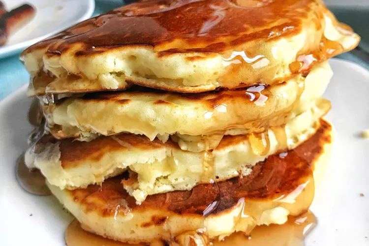

Old Fashioned Pancakes
HOME

Description
Store leftover pancakes in an airtight container in the fridge for about a week.
Refrain from adding toppings (such as syrup) until right before you serve them so the pancakes don't get soggy.
Ingredients
- 1 1/2 cups all-purpose flour
- 1 large egg
- 1 tablespoon white sugar
Steps
- Sift flour, baking powder, sugar, and salt together in a large bowl. Make a well in the center and add milk, melted butter, and egg; mix until smooth.
- Heat a lightly oiled griddle or pan over medium-high heat. Pour or scoop the batter onto the griddle, using approximately 1/4 cup for each pancake; cook until bubbles form and the edges are dry, about 2 to 3 minutes. Flip and cook until browned on the other side. Repeat with remaining batter.